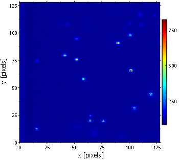
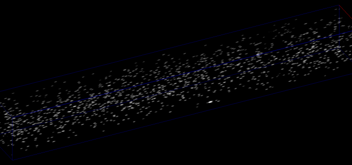
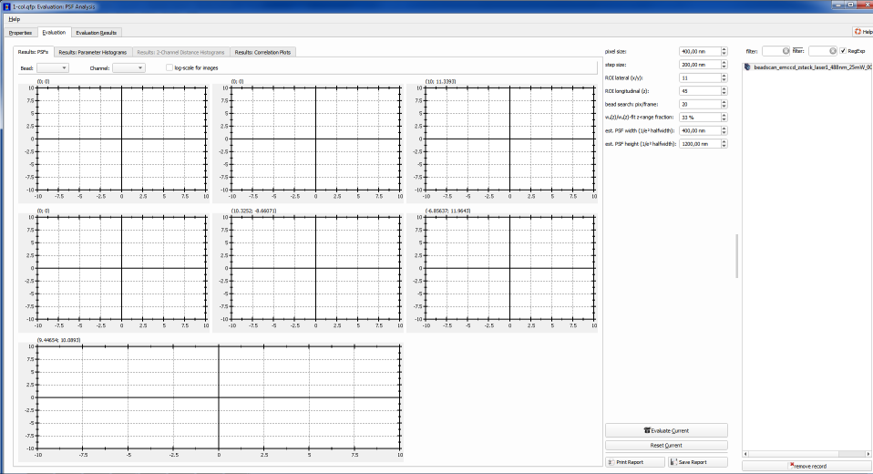
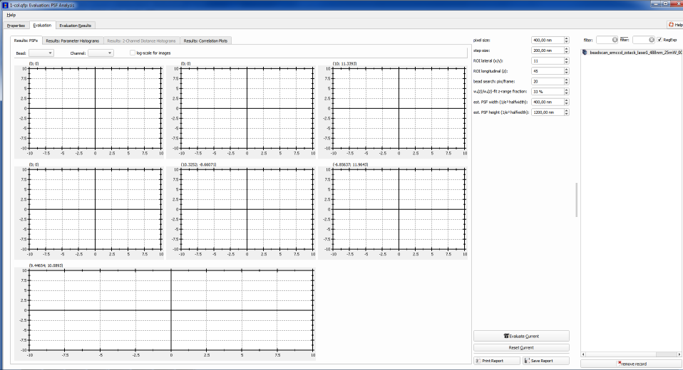
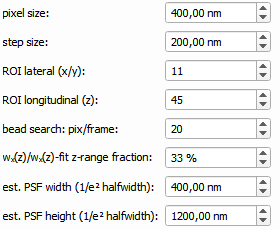

$$qf_commondoc_header.start$$ $$qf_commondoc_header.end$$
$$startbox_note$$
The data for this tutorial is available:
as raw data from http://www.dkfz.de/Macromol/quickfit/examples.html as beadscan_1color_2015_01_30.zip and beadscan_2color_2014_12_08.zip.
$$endbox$$
Introduction
This help file shows, how the PSF Evaluation Plugin can be sued to determine the PSF of a microscope. First you will have to prepare such a beadscan, i.e. a z-stack of a sample of fixed beads (typically, one should use sub-diffractive fluorescent beads embedded in a stiff, but clear gel, see the main help page for details on how to prepare such a gel). Here we will demonstrate this on the example of a lightsheet microscope with a DualView optics for dual-color detection (data, see above). The microscope uses an 60x/NA1 detection objective and a lightsheet with a 1/e²-halfwidth of $(w_{LS}\approx 1.3{\mu}m)$. The pixel size was 400nm and the step-size of the stacks was 200nm. Illumination is done at 488nm and 561nm and detection is done in the windows 500...550nm and 600...700nm.
The methods, described in this tutorial can also be applied to beadstacks, acquired on other microscopes (e.g. confocal). The data should be supplied in the form of TIFF stacks.
Tutorial
Download Example Data
Download the example datasets from: http://www.dkfz.de/Macromol/quickfit/examples.html as beadscan_1color_2015_01_30.zip and beadscan_2color_2014_12_08.zip.
Load Data
- Start QuickFit and start the "PSF Analysis" project wizard from "File | Project Wizards | PSF Analysis".
- Click through the wizard and select one of the XXX.lighpath1.tiff files from the example projects.
- For the DualView stack, make sure to select the horizontal DualView mode. For the 1-color beadstack, select the single-file stack.
- Set the pixel size to 400nm and the step size to 200nm.
Here is a sample frame from the 1-color stack and a 3D rendering (maximum intensity projection):


Set Evaluation Parameters
- Now double-click the "PSF Analysis" in the project:
 

- On the rhs, you can select an image stack from the project (obviously there is only one in this project).
- On the left of this list, you can set the parameters of the evaluation:

Make sure, that the same parameters, as above are given:
- pixel size and step size are given, as stated above.
- ROI lateral and ROI longitudinal are the size of the ROI around each pixel, which is used for fits. From an initial analysis of the image stack, the given values are reasonable choices, since the beads have a lateral size of 3-5 pixels ( = 1-2 μm) and a longitudinal size of 20-30 pixels ( = 4-6μm) (until the decay to the background)
- beads per frame can be set to 20, which is the approximate number of pixels inside beads, as can be seen in the overview image above.
- Finally the estimated PSF width/height are given, which can be calculated/estimated from experience or from the NA of the objective (width: $(\approx\lambda/\mbox{NA}\approx500\mathrm{nm})$, height: $(\approx 2\cdot\lambda/\mbox{NA}^2\approx1000\mathrm{nm})$)
$$note:These steps are the same, for 1-color and 2-color stacks. If the plugin finds too few or too many beads, you should try to modify beads per frame.$$
Evaluate Beadstack
Now you can click on Evaluate Current, which will start the evaluation. When the process has finished, you can observe the different parameters on the left of th window.